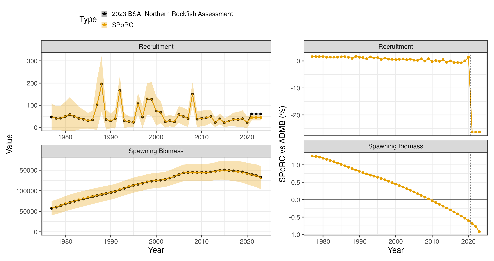
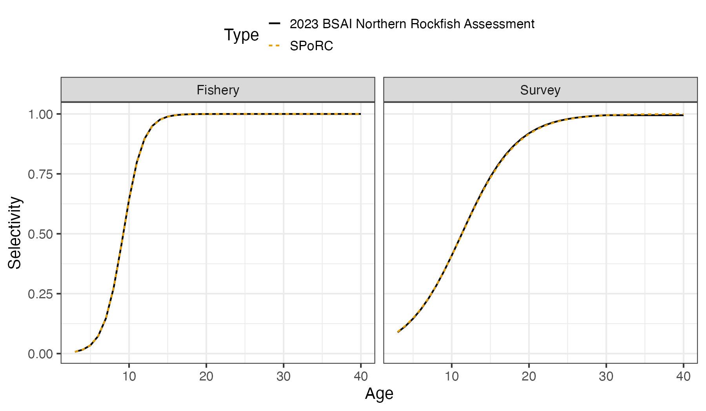

Case Study: Bering Sea and Aleutian Islands Northern Rockfish
y_bsai_northern_rockfish_case_study.RmdOverview
This case study reproduces the 2023 Bering Sea and Aleutian Islands
northern rockfish assessment in SPoRC. Every structural
choice below follows the assessment rather than SPoRC’s
defaults.
The model is single region, single sex, single season, with one fishery fleet and one survey:
| Source | Years | Observations | Likelihood |
|---|---|---|---|
| Catch | 1977–2023 | 47 | Lognormal, weighted |
| Aleutian Islands survey biomass | 1991–2022 | 13 | Lognormal |
| Fishery age compositions | 2000–2021 | 17 | Multinomial |
| Fishery length compositions | 1977–2022 | 11 | Multinomial |
| Survey age compositions | 1991–2022 | 13 | Multinomial |
Model ages run 3 to 45 with a plus group, while the assessment reports over observed ages 3 to 40 with its last column an age 40 plus aggregation. Lengths run 15 to 38 cm.
Model dimensions
Because the model is single region and single sex, the population, region, season and sex subscripts used in the model equations all collapse to one, and are dropped from the notation below.
input_list <- Setup_Mod_Dim(
n_pop = dat$n_pop,
years = yrs,
ages = dat$ages,
lens = dat$lens,
n_regions = dat$n_regions,
n_sexes = dat$n_sexes,
n_fish_fleets = dat$n_fish_fleets,
n_srv_fleets = dat$n_srv_fleets,
n_seas = dat$n_seas,
verbose = FALSE
)Recruitment and the initial age structure
Recruitment is a mean with annual deviations rather than a stock recruit function, and the last three years take the mean outright:
The initial age structure is where this assessment differs most from
a SPoRC default. Its fyear_ac_option 3 gives
the first year its own scalar, independent of the recruitment level,
with deviations that ages beyond the observed range share:
use_rinit = 1 is what creates that separate scalar, and
equil_init_age_strc = "stoch_shared_ages" with an explicit
init_age_devs_shared vector is what makes the ages past the
observed range share the last deviation. SPoRC carries the
initial numbers as multiplicative deviations from an equilibrium age
structure rather than as the structure itself, so the seeding step below
converts between the two.
The bias ramp is on with every ramp year at the terminal year, which centres the recruitment penalty on . That matches the shifted deviations the seeds carry, described in the seeding section.
input_list <- Setup_Mod_Rec(
input_list = input_list,
rec_model = "mean_rec",
do_rec_bias_ramp = 1,
bias_year = rep(n_yrs, 4),
sigmaR_switch = 1,
ln_sigmaR = array(log(dat$sigmaR), dim = c(2, dat$n_pop, dat$n_regions)),
equil_init_age_strc = "stoch_shared_ages",
init_age_devs_shared = c(1:(n_obs_ages - 1), rep(n_obs_ages - 1, n_ages - n_obs_ages)),
dont_est_recdev_last = 3,
sigmaR_spec = "fix",
init_age_strc = 1,
t_spawn = (dat$spawn_mo - 1) / 12,
use_rinit = 1
)Biological dynamics
Natural mortality is estimated under a lognormal prior. The
assessment states its prior as a mean of
on the natural scale, so the median supplied to SPoRC is
shifted by
to put the prior mean where the assessment puts it:
Weight at age is year varying, and the fishery carries its own weight
at age matrix through WAA_fish, which prices the catch,
while the population matrix prices spawning biomass and the survey.
input_list <- Setup_Mod_Biologicals(
input_list = input_list,
WAA = dat$WAA,
WAA_fish = dat$WAA_fish,
MatAA = dat$MatAA,
fit_lengths = 1,
SizeAgeTrans = dat$SizeAgeTrans,
AgeingError = dat$AgeingError,
M_spec = "est_ln_M",
Use_M_prior = 1,
M_prior = data.frame(popblk = 1, regionblk = 1, yearblk = 1, ageblk = 1, sexblk = 1,
mu = dat$mean_M * exp(-dat$cv_M^2 / 2), sd = dat$cv_M),
addtosrvidx = 1e-13,
addtocomp = 1e-13
)Movement and tagging
The model is single region, so movement is an identity matrix and no tagging data are used. Both still have to be declared.
input_list <- Setup_Mod_Movement(input_list = input_list, use_fixed_movement = 1,
Fixed_Movement = NA, do_recruits_move = 0)
input_list <- Setup_Mod_Tagging(input_list = input_list, use_conv_fish_tagging = 0)Catch and fishing mortality
The assessment writes its catch and F statements as weighted sums of squares with weights and . A weighted sum of squares and a normal likelihood with a fixed standard deviation are the same statement up to a constant, related by , so both weights are carried inside the standard deviations rather than applied outside the sums.
suppressWarnings(
input_list <- Setup_Mod_Catch_and_F(
input_list = input_list,
ObsCatch = dat$ObsCatch,
UseCatch = dat$UseCatch,
Use_F_pen = 1,
sigmaC_spec = "fix",
ln_sigmaC = array(log(sqrt(1 / (2 * dat$catch_wt))),
dim = c(dat$n_regions, n_yrs, dat$n_seas, dat$n_fish_fleets)),
ln_sigmaF = array(log(sqrt(1 / (2 * dat$fmort_wt))),
dim = c(dat$n_regions, dat$n_seas, dat$n_fish_fleets))
)
)Fishery compositions
There is no fishery index in this assessment, only compositions, so
fish_idx_type is "none" and the index arrays
are declared empty.
input_list <- Setup_Mod_FishIdx_and_Comps(
input_list = input_list,
ObsFishIdx = array(NA, dim = c(dat$n_regions, n_yrs, dat$n_seas, dat$n_fish_fleets)),
ObsFishIdx_SE = array(NA, dim = c(dat$n_regions, n_yrs, dat$n_seas, dat$n_fish_fleets)),
UseFishIdx = array(0, dim = c(dat$n_regions, n_yrs, dat$n_seas, dat$n_fish_fleets)),
ObsFishAgeComps = dat$ObsFishAgeComps,
UseFishAgeComps = dat$UseFishAgeComps,
ISS_FishAgeComps = dat$ISS_FishAgeComps,
ObsFishLenComps = dat$ObsFishLenComps,
UseFishLenComps = dat$UseFishLenComps,
ISS_FishLenComps = dat$ISS_FishLenComps,
fish_idx_type = "none",
FishAgeComps_LikeType = "Multinomial",
FishLenComps_LikeType = "Multinomial",
FishAgeComps_Type = "agg_Year_1-terminal_Fleet_1",
FishLenComps_Type = "agg_Year_1-terminal_Fleet_1"
)Survey index and compositions
The Aleutian Islands bottom trawl survey supplies a biomass index and age compositions. The index is lognormal with year specific standard errors, and the survey is fit at mid year.
input_list <- Setup_Mod_SrvIdx_and_Comps(
input_list = input_list,
ObsSrvIdx = dat$ObsSrvIdx,
ObsSrvIdx_SE = dat$ObsSrvIdx_SE,
UseSrvIdx = dat$UseSrvIdx,
ObsSrvAgeComps = dat$ObsSrvAgeComps,
ISS_SrvAgeComps = dat$ISS_SrvAgeComps,
UseSrvAgeComps = dat$UseSrvAgeComps,
ObsSrvLenComps = dat$ObsSrvLenComps,
UseSrvLenComps = dat$UseSrvLenComps,
ISS_SrvLenComps = dat$ISS_SrvLenComps,
srv_idx_type = "biom",
SrvAgeComps_LikeType = "Multinomial",
SrvLenComps_LikeType = "Multinomial",
SrvAgeComps_Type = "agg_Year_1-terminal_Fleet_1",
SrvLenComps_Type = "agg_Year_1-terminal_Fleet_1"
)Fishery selectivity and catchability
Both fleets use the slope and
parameterisation of the logistic, which is logist1:
Selectivity is time invariant, so there are no deviations and no process error. Fishery catchability is not used, because there is no fishery index to scale.
input_list <- Setup_Mod_Fishsel_and_Q(
input_list = input_list,
cont_tv_fish_sel = "none_Fleet_1",
fish_sel_blocks = "none_Fleet_1",
fish_sel_model = "logist1_Fleet_1",
fish_q_blocks = "none_Fleet_1",
fish_fixed_sel_pars_spec = "est_all",
fish_q_spec = "fix"
)Survey selectivity and catchability
Two constraints on the survey side are worth stating carefully.
The catchability prior has a coefficient of variation of , which is tight enough to pin at one. That is the assessment’s intent, and it is why the prior term is rather than a live contribution.
The selectivity constraint is not a prior on the selectivity parameters. The assessment penalises the realized selectivity value at age 30 towards one with a standard deviation of :
type = "value" in srv_selex_prior makes
exactly that statement, and it is load bearing: without it the survey
age compositions do not identify the selectivity asymptote.
input_list <- Setup_Mod_Srvsel_and_Q(
input_list = input_list,
cont_tv_srv_sel = "none_Fleet_1",
srv_sel_blocks = "none_Fleet_1",
srv_sel_model = "logist1_Fleet_1",
srv_q_blocks = "none_Fleet_1",
srv_fixed_sel_pars_spec = "est_all",
srv_q_spec = "est_all",
Use_srv_q_prior = 1,
srv_q_prior = data.frame(region = 1, block = 1, fleet = 1,
mu = dat$mean_q * exp(-dat$cv_q^2 / 2), sd = dat$cv_q),
t_srv = array(0.5, dim = c(dat$n_regions, dat$n_seas, dat$n_srv_fleets)),
Use_srv_selex_prior = 1,
srv_selex_prior = data.frame(region = 1, fleet = 1, block = 1, sex = 1,
par = which(dat$ages == 30),
mu = 1.0, sd = 0.003, type = "value")
)Weighting
The catch and F weights are already inside their standard deviations, so the only weights left are the composition multipliers, which are the assessment’s McAllister Ianelli values and ship in the data object.
input_list <- Setup_Mod_Weighting(
input_list = input_list,
Wt_Catch = 1, Wt_FishIdx = 1, Wt_SrvIdx = 1,
Wt_Rec = 1, Wt_F = 1, Wt_Tagging = 0,
Wt_FishAgeComps = dat$Wt_FishAgeComps,
Wt_FishLenComps = dat$Wt_FishLenComps,
Wt_SrvAgeComps = dat$Wt_SrvAgeComps,
Wt_SrvLenComps = dat$Wt_SrvLenComps
)Starting at the ADMB estimate
Before optimizing anything, it is worth checking that the model is reproduced at a known point. Setting every parameter to the assessment’s maximum likelihood estimate and evaluating there separates a specification error from an optimization difference: if the population and the likelihood agree at the ADMB solution, the two models are the same model.
Two conversions are needed. The assessment builds its three deviation
free terminal recruits as
while leaving the estimated years raw, and its recruitment deviations
are a dev_vector constrained to sum to zero. Carrying the
bias correction in ln_global_R0 and shifting every seeded
deviation down by the same amount reproduces both the recruitment series
and the penalty value exactly.
The initial age structure conversion is the second. The assessment
writes the first year directly, while SPoRC carries
multiplicative deviations from an equilibrium age structure, so the
deviations are the log ratio of the two.
mle <- dat$mle
s2 <- dat$sigmaR^2 / 2
input_list$par$ln_global_R0[] <- mle$mean_log_rec + s2
input_list$par$ln_RecDevs[1, 1, ] <- mle$rec_dev - s2
input_list$par$ln_rinit <- mle$log_rinit
input_list$par$ln_M[] <- log(mle$M)
input_list$par$ln_srv_q[] <- log(mle$q_srv)
input_list$par$ln_F_mean[] <- mle$log_avg_fmort
input_list$par$ln_F_devs[1, , 1, 1] <- mle$fmort_dev
input_list$par$fish_fixed_sel_pars[] <- log(c(mle$sel_a50_fish, mle$sel_aslope_fish))
input_list$par$srv_fixed_sel_pars[] <- log(c(mle$sel_a50_srv, mle$sel_aslope_srv))
# The assessment's initial numbers at age against SPoRC's equilibrium reference.
NAA_equil <- exp(mle$log_rinit) * exp(-(0:(n_ages - 1)) * mle$M)
NAA_equil[n_ages] <- NAA_equil[n_ages - 1] * exp(-mle$M) / (1 - exp(-mle$M))
NAA_styr <- NAA_equil
for(j in 2:n_obs_ages) {
NAA_styr[j] <- exp(mle$log_rinit - mle$M * (j - 1) + mle$fydev[j - 1])
} # end j loop
for(j in (n_obs_ages + 1):n_ages) {
NAA_styr[j] <- exp(mle$log_rinit - mle$M * (j - 1) + mle$fydev[length(mle$fydev)])
} # end j loop
NAA_styr[n_ages] <- exp(mle$log_rinit - mle$M * (n_ages - 1) +
mle$fydev[length(mle$fydev)]) / (1 - exp(-mle$M))
input_list$par$ln_InitDevs[1, 1, , ] <- (log(NAA_styr) - log(NAA_equil))[-1]One thing SPoRC cannot express is the assessment’s
nselages edge hold, which evaluates the logistic over ages
3 to 30 only and holds both curves at the age 30 value beyond that. For
the seed evaluation the survey curve is supplied as a fixed input with
that hold applied, which isolates the likelihoods from the selectivity
form. The refit below estimates the uncapped logistic instead, and that
is the only specification difference between the two stages.
bridge_list <- input_list
bridge_list$data <- cap_bsai_nork_srv_sel(bridge_list$data, dat)
obj <- fit_model(bridge_list$data, bridge_list$par, bridge_list$map,
do_optim = FALSE, silent = TRUE)
r <- obj$repAt that point every reported quantity agrees with the ADMB model:
fishery selectivity max pct diff: 1.3e-04
survey selectivity max pct diff: 3.3e-04
numbers at age max pct diff: 5.0e-04
spawning biomass max pct diff: 3.9e-04
recruitment max pct diff: 2.5e-04
fishing mortality max pct diff: 4.4e-04The likelihood is checked the same way. SPoRC writes
each component as a proper density while the assessment drops
normalising constants, so a like for like comparison subtracts exactly
the constants the assessment omits. The survey statement keeps its
term but drops
,
and its standard errors vary by year, so that constant is summed over
the observations rather than counted. The recruitment penalty keeps its
terms over the recruitment and initial age deviations together, which is
why it is negative:
is
.
| Component | SPoRC |
Assessment |
|---|---|---|
| Catch sum of squares | 0.00417 | 0.0000209 |
| Survey index | 8.78014 | 8.78103 |
| Fishery age compositions | 257.649 | 257.649 |
| Fishery length compositions | 84.2464 | 84.2464 |
| Survey age compositions | 198.736 | 198.736 |
| Recruitment | -1.73126 | -1.73126 |
| F regularity | 5.98039 | 5.98039 |
| Survey selectivity prior | 1.56319 | 1.56319 |
| prior | 0.253029 | 0.253029 |
| prior | 0.00000349 | 0.00000349 |
| Like for like total | 555.481 | 555.4816 |
Nine of the ten components land on the assessment’s value. The catch
statement is the exception, and both sides are numerically zero against
an objective of
:
the assessment fits catch to
and SPoRC to
,
which is a difference in how near exactly catch is driven rather than a
difference in the statement. The assessment estimates maturity inside
its template while SPoRC fixes it, so its maturity
likelihood is removed from its side of the total.
Fitting and comparison
est <- fit_model(input_list$data, input_list$par, input_list$map,
random = NULL, newton_loops = 3, silent = TRUE)
est$sdrep <- RTMB::sdreport(est)free parameters: 137
final jnLL: 591.667 max |gradient|: 2.4e-12
pdHess: TRUEThe refit moves further from the assessment than the other rockfish bridges do, by a median of percent in spawning biomass, and the reason is the selectivity form rather than anything in the likelihoods. The refit estimates an uncapped logistic where the assessment holds its curve flat past age 30, so the two are fitting slightly different shapes over the oldest ages, which the survey age compositions do see.
| Quantity | Median difference | Maximum difference |
|---|---|---|
| Spawning biomass | 0.60 % | 1.25 % |
| Recruitment, estimated years | 0.82 % | 1.69 % |

The dashed rule marks where the estimated recruitment deviations
stop. Over the three terminal years the assessment builds recruitment as
the mean of the lognormal and SPoRC as the median, so a
ratio of
is expected there by convention. The observed ratio is
,
and the remainder is the shift in the estimated recruitment level
between the two fits rather than a second convention.

The survey panel is where the refit and the assessment part company, for the reason given above.